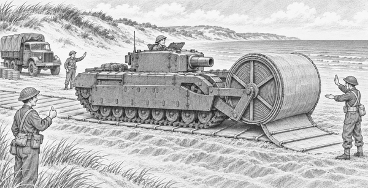

It was 1944, during World War Two.
Allied engineers were preparing for the Normandy landings.
They had a sandy problem.
A beach can look firm.
Yet heavy wheels and tracks may sink into soft sand.
A stuck vehicle could block every vehicle behind it.
The engineers needed a road.
But there was no time to build one with stones.
So they made a tank carry its own road!
The machine was a Churchill AVRE.
AVRE meant Assault Vehicle Royal Engineers.
It was a Churchill tank changed for engineering work.
One special version carried a huge reel at the front.
The reel was called a Bobbin.
Wrapped around it was a broad canvas mat.
Strong steel rods ran across the canvas.
Bobbin fact: The reel carried a trackway about three metres wide. That is wider than a small car is long.
Before the vehicle moved, engineers checked the reel.
They checked its frame.
They checked the first part of the mat.
Everyone moved well away from the tracks.
A guide raised one arm.
The driver selected a low gear.
The Churchill began to crawl.
Clank. Creep. Clank.
The great reel turned.
The mat dropped onto the sand.
Then the tank drove over the mat it had just unrolled.
Roll. Flatten. Grip.
The canvas spread the tank's weight.
The steel rods helped hold the shape.
Instead of digging into one soft patch, the tracks pressed on a much wider path.
Ground fact: Spreading a heavy load over a larger area lowers the pressure on each small patch of sand. This helps a vehicle stay on top.
The Churchill crawled farther.
More trackway came off the reel.
A straight road appeared behind it.
A lorry waited at the edge of the beach.
Its driver did not rush.
First, the engineers inspected the mat.
Was it lying flat?
Were the edges safe?
Was the sand beneath it holding?
The guide gave a clear signal.
Now the lorry rolled onto the new path.
Its tyres stayed on top.
Another vehicle followed.
Then another.
The Bobbin had not made a normal road.
It had made a quick road for a difficult place.
The tank looked slow and strange.
Its giant reel made it look as if it carried a carpet.
But that strange carpet solved a serious problem.
A heavy tank had rolled out a road beneath its own tracks.
1. What did the Bobbin unroll?
2. Why was the trackway useful?
3. About how wide was the trackway?